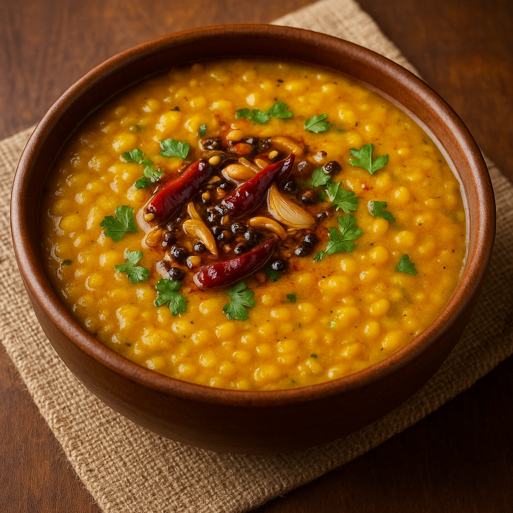

🥣 Dal Tadka
Description
Dal Tadka is a classic Indian comfort dish made with yellow lentils (toor dal) simmered to perfection and topped with a sizzling ghee-based tempering of garlic, onions, and spices. It’s flavorful, nutritious, and pairs beautifully with steamed rice or naan — a staple in every Indian household.
Ingredients
- 1 cup toor dal (yellow split pigeon peas)
- 1 medium onion (finely chopped)
- 2 medium tomatoes (chopped)
- 4 garlic cloves (minced)
- 1 tsp ginger (grated)
- 2 green chilies (slit)
- 1/2 tsp turmeric powder
- 1 tsp cumin seeds
- 1/2 tsp red chili powder
- 1/2 tsp garam masala
- 2 tbsp ghee or oil
- Fresh coriander leaves (chopped)
- Salt to taste
Steps
- Wash dal thoroughly and pressure cook with 2.5 cups of water, turmeric, and a pinch of salt until soft (3–4 whistles).
- In a separate pan, heat ghee. Add cumin seeds and let them splutter.
- Add garlic, ginger, and green chilies. Sauté until fragrant.
- Add chopped onions and sauté until golden brown.
- Add tomatoes, salt, red chili powder, and garam masala. Cook until tomatoes are soft.
- Pour this tempering into the cooked dal. Mix and simmer for 5 minutes.
- Garnish with fresh coriander and serve hot with rice or roti.